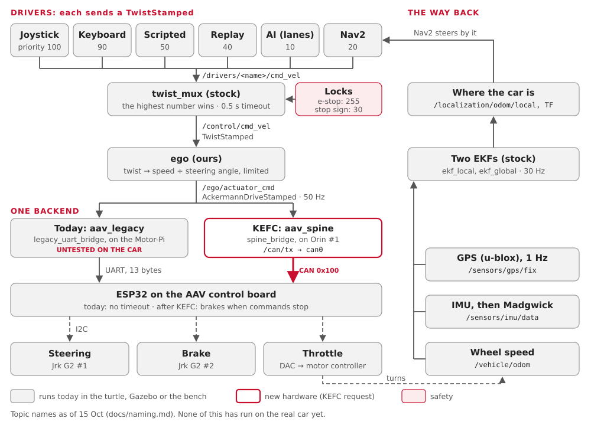

Follow one joystick push from your hand to the wheels, then a Nav2 goal, then the sensor data on its way back.
You'll learn:
- every hop a command takes: which program, which topic, how often;
- what can go wrong at each hop, and how to watch it;
- how the car's sensors close the loop.
Words you may not know (topic, node, twist, Ackermann, CAN) are in the Glossary. The boxes themselves are in The car, box by box.
Not on the car yet
Every hop below runs in the turtle, Gazebo or bench mode. None of it has run on the real car yet: the car still runs the 2025-26 code, on Humble.
The whole trip in one picture

Two ideas make it simple:
| Idea | Means |
|---|---|
| Every driver speaks the same language | a speed (m/s) and a turn rate (rad/s): a TwistStamped |
| Only ego knows it's a car | ego turns the twist into a speed and a steering angle: an AckermannDriveStamped |
1. The joystick push
You hold the trigger (the deadman) and push the stick forward.
| # | Who | Topic | Message | Rate | What can go wrong | Watch it |
|---|---|---|---|---|---|---|
| 1 | joy_node (stock joy) reads the USB joystick |
/drivers/joy/joy |
sensor_msgs/Joy |
20 Hz while held | wrong axis or button numbers (still a TODO for the team's joystick) | ros2 topic echo /drivers/joy/joy |
| 2 | teleop_twist_joy_node (stock) |
/drivers/joy/cmd_vel |
geometry_msgs/TwistStamped |
20 Hz, only while the trigger is held | trigger not held: nothing is sent | ros2 topic echo /drivers/joy/cmd_vel |
| 3 | twist_mux (stock) picks one driver |
/control/cmd_vel |
TwistStamped |
as fast as the winner sends | a higher driver is talking; /safety/estop is true |
ros2 topic echo /control/cmd_vel |
| 4 | ego (ours) |
/ego/actuator_cmd |
ackermann_msgs/AckermannDriveStamped |
50 Hz, always | no /control/cmd_vel for 0.3 s: ego slows to a stop |
ros2 topic hz /ego/actuator_cmd |
How twist_mux picks:
| Driver | Topic | Priority |
|---|---|---|
| joystick | /drivers/joy/cmd_vel |
100 (the highest) |
| RC transmitter, via ROS | /drivers/rc/cmd_vel |
95 |
| keyboard | /drivers/keyboard/cmd_vel |
90 |
| actuator tests | /drivers/tests/cmd_vel |
60 |
| scripted test | /drivers/scripted/cmd_vel |
50 |
| replay | /drivers/replay/cmd_vel |
40 |
| point (drive to a GPS point) | /drivers/point/cmd_vel |
25 |
| Nav2 | /drivers/nav/cmd_vel |
20 |
| AI (lane keeping) | /drivers/ai/cmd_vel |
10 |
lock: /safety/estop true |
blocks everyone below 255 | 255 |
lock: /safety/legacy_uart_bridge/lock true: the ESP32's firmware has no timeout (frame_version: 1) |
blocks scripted, replay, point, Nav2 and AI | 60 |
lock: /perception/stop_sign true |
blocks point, Nav2 and AI | 30 |
lock: /safety/sensor_watchdog/lock true, or silent 1 s |
blocks point, Nav2 and AI | 30 |
A driver counts while its last message is under 0.5 s old. Let go of the trigger and, 0.5 s later, twist_mux hands control to the next driver.
What ego does:
| Step | Rule |
|---|---|
| Steering angle | atan(wheelbase × turn rate ÷ speed): the bicycle model |
| Speed limits | 1.0 m/s forward, 0.5 m/s reverse (to start) |
| Speed changes | at most 1.0 m/s² faster, 2.0 m/s² slower |
| Steering limits | ±0.5 rad, changing at most 0.6 rad/s |
| At zero speed | it holds the wheels where they are: a twist with no speed has no curve |
2. Today: to the wheels through the Motor-Pi
Today's car would drive through the 2025-26 hardware, with our aav_legacy backend.
untested on the car.
| # | Who | Topic or wire | Message | Rate | What can go wrong | Watch it |
|---|---|---|---|---|---|---|
| 5 | the output mux, then ROS 2 over Ethernet, Orin → Motor-Pi | /control/car/actuator_cmd |
the same | 50 Hz | any source not REAL (/safety/output_mux/state says STOP); a different ROS_DOMAIN_ID; the network |
on the Pi: ros2 topic hz /control/car/actuator_cmd |
| 6 | legacy_uart_bridge on the Motor-Pi |
UART /dev/ttyAMA0, 115200 baud |
13 bytes: steering, speed, accel, checksum | 50 Hz | stale for 0.3 s, or /safety/estop true: it sends brake frames |
the node's log |
| 7 | the ESP32 (2025-26 firmware) | I2C | Jrk targets, a DAC value | each frame | no timeout: if frames stop, the last throttle stays on | nothing comes back |
| 8 | Jrk G2 #1, Jrk G2 #2, the DAC | wires | steering, brake, throttle voltage | the throttle is open loop: no speed feedback | watch the car, wheels off the ground |
Today's weak spot
If the Motor-Pi or its bridge dies, the ESP32 keeps the last throttle. Keep the wheels off the ground and the e-stop in hand: see Firmware.
3. After the KEFC changes: CAN
With car.launch.py actuators:=can, the CAN spine replaces the Motor-Pi. Today's default
is actuators:=uart (section 2). The CAN path works on the bench, against a pretend board
(spine_sim). It has never driven the car. The ESP32's Rust firmware can take CAN
(esp32-umod, --features can): built, not yet flashed.
| # | Who | Topic or wire | Message | Rate | What can go wrong | Watch it |
|---|---|---|---|---|---|---|
| 5 | spine_bridge on Orin #1 |
/can/tx |
can_msgs/Frame: DRIVE_CMD 0x100 (speed, steering) |
50 Hz, only while ego is fresh | not armed: the board ignores it (/spine/arm) |
ros2 topic echo /can/tx |
| 6 | socket_can_sender (stock ros2_socketcan) |
can0, 500 kbit/s |
a CAN frame, with a counter and a CRC | 50 Hz | can0 not up; a missing 120 Ω end |
candump can0 (Linux, can-utils) |
| 7 | the control board's ESP32 | I2C | its own speed loop, into Jrk targets and the DAC | about 100 Hz | no good frame for 100 ms: it brakes | VEHICLE_STATUS 0x181 on the bus |
| 8 | Jrk G2s, DAC | wires | steering (read back from the KTC-100 pot), brake, throttle | a driver fault: it brakes and sets a fault bit | ros2 topic echo /vehicle/status |
The frames are defined in firmware/can/aav.dbc (Firmware). The KEFC plan
changes a few: CAN plan (Proposed).
4. A Nav2 goal
Nav2 is just another driver, at priority 20. Its command joins the same path at hop 3.
| # | Who | Topic | Message | Rate | What can go wrong | Watch it |
|---|---|---|---|---|---|---|
| 1 | You, in RViz: "2D Goal Pose" | /goal_pose |
geometry_msgs/PoseStamped |
once | the goal is off the map | ros2 topic echo /goal_pose |
| 2 | bt_navigator starts the action |
/navigate_to_pose |
NavigateToPose action |
once | ros2 action list |
|
| 3 | planner_server (SmacPlannerHybrid: paths a car can drive) |
/plan |
nav_msgs/Path |
when asked | no path fits the turning circle | RViz shows the path |
| 4 | controller_server (MPPI) |
cmd_vel_nav |
TwistStamped |
20 Hz | no TF map → odom → base_link |
ros2 topic hz /cmd_vel_nav |
| 5 | velocity_smoother |
/drivers/nav/cmd_vel, or /control/cmd_vel_smoothed where the radar runs |
TwistStamped |
20 Hz | ros2 topic echo /drivers/nav/cmd_vel |
|
| 6 | collision_monitor (only where the radar runs) |
/drivers/nav/cmd_vel |
TwistStamped |
20 Hz | a radar point in the 1 m stop zone, or a silent radar: it sends zero | ros2 topic echo /safety/collision_monitor/state |
| 7 | twist_mux, then ego and the backend |
as in sections 1 to 3 | the joystick, the keyboard or a stop sign outranks Nav2 | ros2 topic echo /control/cmd_vel |
A street route can go in too: street_router (and the language tools) call the action
/follow_gps_waypoints with GPS points (Street routes).
5. The way back: sensors to "where am I"
The car tells the software what it really did. This closes the loop.
| # | From | Topic | Message | Rate | Read by |
|---|---|---|---|---|---|
| 1 | Wheel speed: spine_bridge role:=sensors, from the wheel sensors on the Orin's CAN bus (the 2025-26 car: encoder_udp) |
/vehicle/odom |
nav_msgs/Odometry (speed only) |
about 100 Hz (encoder_udp: 10 Hz) |
both EKFs |
| 2 | IMU: imu_node (Yahboom) |
/sensors/imu/data_raw |
sensor_msgs/Imu |
as the device sends | imu_filter_madgwick |
| 3 | imu_filter_madgwick |
/sensors/imu/data |
sensor_msgs/Imu, with an orientation |
the same | both EKFs |
| 4 | GPS: ublox_gps |
/sensors/gps/fix |
sensor_msgs/NavSatFix |
1 Hz | navsat_transform |
| 5 | navsat_transform |
/localization/gps/odom |
Odometry, in map x and y |
with each fix | ekf_global |
| 6 | ekf_local |
/localization/odom/local, TF odom → base_link |
Odometry |
30 Hz | Nav2's controller, the scripted driver |
| 7 | ekf_global |
/localization/odom/global, TF map → odom |
Odometry |
30 Hz | navsat_transform, Nav2's planner (through TF) |
| 8 | navsat_transform |
/localization/gps/fix |
NavSatFix |
30 Hz | the HUD's map |
| 9 | the backend (spine, Gazebo) | /vehicle/status |
aav_interfaces/VehicleStatus |
10 Hz | the HUD |

| What can go wrong | What you see | Watch it |
|---|---|---|
| No wheel speed | ekf_local drifts, then stops moving |
ros2 topic hz /vehicle/odom |
| No IMU | the car's heading never turns | ros2 topic hz /sensors/imu/data |
| No GPS fix | ekf_global drifts with ekf_local |
ros2 topic echo /sensors/gps/fix (status −1 = no fix) |
| Today's car | no /vehicle/status: the legacy backend sends it only with uplink: true (legacy.yaml), off until its wire is confirmed |
ros2 topic info /vehicle/status |
Why the two EKFs don't talk on a topic: Topic areas.
Try it
The turtle runs the same command path, on one computer:
pixi run turtle # terminal 1: a turtle that steers like the car
pixi run keyboard --local # terminal 2: hold i to drive
pixi run graph # terminal 3: rqt_graph, the whole path as a pictureThen watch each hop in another terminal. tools/ros.sh --local keeps it on this
computer, like the turtle:
pixi run tools/ros.sh --local ros2 topic echo /drivers/keyboard/cmd_vel
pixi run tools/ros.sh --local ros2 topic echo /control/cmd_vel
pixi run tools/ros.sh --local ros2 topic hz /ego/actuator_cmdFor the CAN path, run pixi run bench, then
pixi run tools/ros.sh --local ros2 topic echo /can/tx. pixi run estop and
pixi run estop-clear try the e-stop. pixi run check turtle compares the running graph
with docs/interfaces.yaml.
Where this lives in the code
| Hop | Where |
|---|---|
| Joystick | ros/drivers/aav_teleop/config/ |
| Keyboard | tools/keyboard.sh |
| twist_mux priorities | ros/command_mux/aav_command_mux/config/twist_mux.yaml |
| ego | ros/ego/aav_ego/ (the maths: ackermann.py; the limits: config/) |
| Today's backend | ros/can_bridge/aav_legacy/ (legacy_uart_bridge.py, encoder_udp.py) |
| The CAN backend | ros/can_bridge/aav_spine/ (spine_bridge.py, can_codec.py) |
| The CAN frames | firmware/can/aav.dbc |
| The board's logic | firmware/spine/crates/spine-core |
| Nav2 | ros/drivers/aav_navigation/ |
| The EKFs | ros/localization/aav_localization/config/ |
| Every topic | docs/interfaces.yaml, shown as Topics |